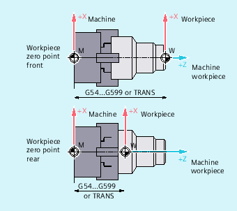
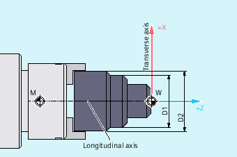

The two geometry axes perpendicular to one another are usually called:
Longitudinal axis | = Z axis (abscissa) |
Transverse axis | = X axis (ordinate) |
Whereas the machine zero is permanently defined, the workpiece zero can be freely selected on the longitudinal axis. Generally the workpiece zero is on the front or rear side of the workpiece.
Both the machine and the workpiece zero are on the turning center. The settable offset on the X axis is therefore zero.
M | Machine zero |
W | Workpiece zero |
| Longitudinal axis |
| Transverse axis |
| Call for the position of the workpiece zero |
Generally the dimensions for the transverse axis are diameter specifications (double path dimension compared to other axes):
The geometry axis that is to serve as transverse axis is defined in the machine data (→ machine manufacturer).